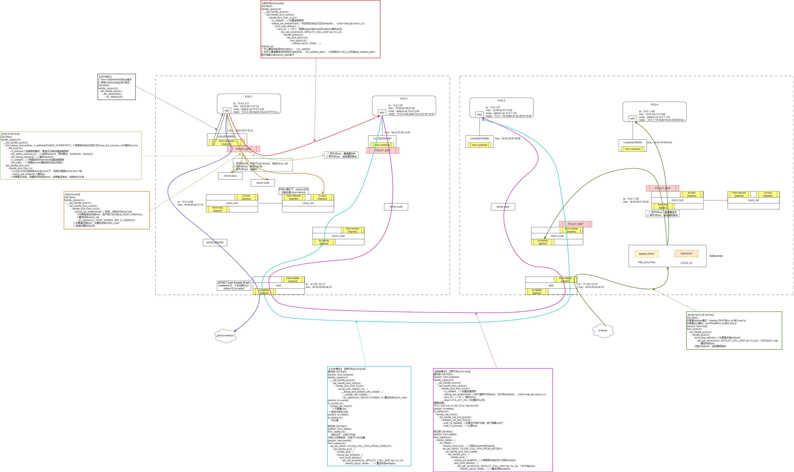

Introduction
gitbook搭建
网络
网络基础
内核是如何接收一个网络包的
内核DMA机制
veth设备
tun/tap设备
Bridge
VXLAN
GRE
邻居子系统
路由子系统
netfilter
负载均衡
LVS
Maglev
流量控制
缓冲膨胀
公平队列控制延迟
Kubernetes
Jobs
CronJob
CRD
Operator
kubelet
OVS
eBPF
XDP
cilium
内核
进程调度
内存管理
Kdump
Kprobes
八股
一致性hash
杂项
centos安装v2ray
docker/containerd设置代理实现从外网拉取镜像
编译安装ovs
k8s 将docker切换为containerd
编译内核
时间线
Published with GitBook
cilium
Cilium

results matching "
"
No results matching "
"